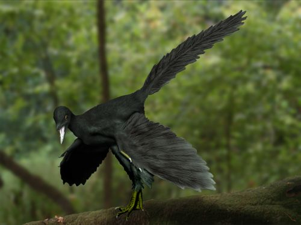

Archaeopteryx
Archaeopteryx lithographica
Período
Viveu durante o período Jurássico Superior, há aproximadamente 150 milhões de anos.
Alimentação
Provavelmente se alimentava de insetos e de pequenos animais.
Características
Era pequeno, com tamanho próximo ao de um corvo, e tinha penas, asas, dentes, garras nas asas e uma longa cauda óssea.
Curiosidades
- Seu nome significa “asa antiga”.
- Seus fósseis foram encontrados na Alemanha.
- É considerado um exemplo importante da ligação entre os dinossauros e as aves.